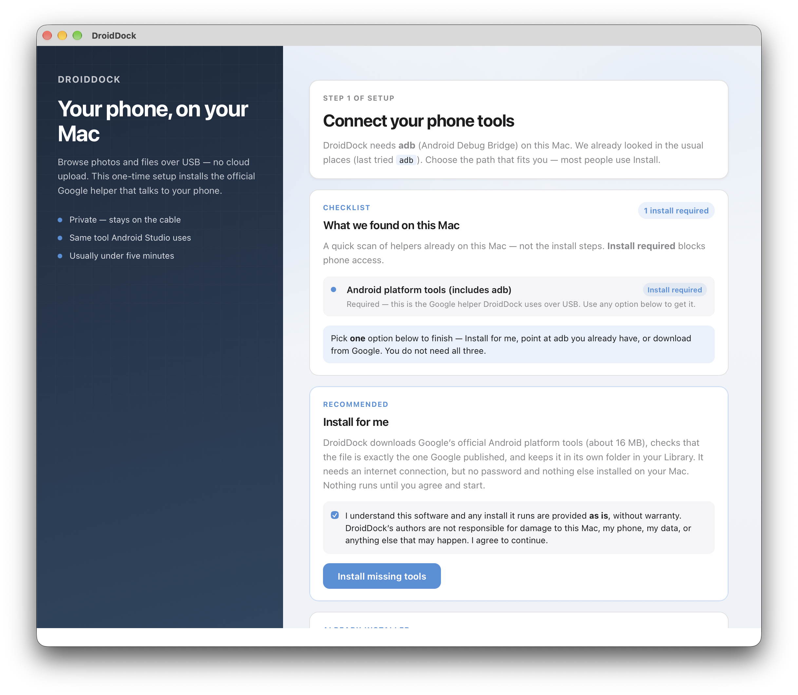
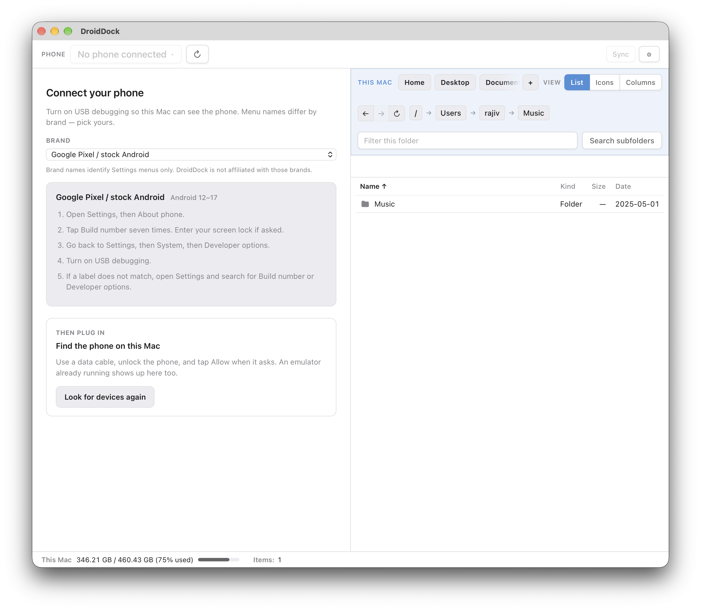

Copy files between an Android phone and a Mac over USB. A copy goes either way, and nothing is uploaded to a cloud.
brew tap rajivm1991/droiddock && brew install --cask
droiddock
Both sides stay open. Copy either way, with a queue you can pause or cancel and a question before an existing file is replaced.
No Homebrew and no password. DroidDock downloads Google's adb tool and checks it for you.
Follows your Mac's appearance automatically, or set it yourself from Cmd+,.
You don't need to know anything about Android development. This takes about 5 minutes, once.
Download the DMG below, open it, and drag DroidDock into Applications. If macOS says it's "damaged", that's a normal Gatekeeper warning for apps outside the App Store — see the FAQ for the one-line fix.
DroidDock needs ADB (Android Debug Bridge), Google's tool for reaching an Android phone over USB. If your Mac has none, open DroidDock and click Install missing tools.

This is a hidden Android setting that tells your phone to trust computer connections. Menu names differ by brand, so with no phone connected DroidDock shows the steps for yours.

On stock Android it goes like this:
Worried this is risky? See "Is USB debugging safe?" below.
Plug your phone into your Mac with a USB cable. On your phone, tap Allow on the "Allow USB debugging?" prompt (check "Always allow" to skip this next time). Open DroidDock — your phone opens next to This Mac within a few seconds.
New to Android development terms? Start here.
Yes. USB debugging is Android's official developer interface — the same one Android Studio and every Android tool uses. Enabling it does not root your phone, void your warranty, or expose your phone to the internet. It only allows a computer you've physically connected and explicitly approved (via the "Allow USB debugging?" prompt) to communicate with your device. You can turn it off anytime afterward in Developer options.
ADB (Android Debug Bridge) is Google's tool for a computer to talk to an Android phone over USB. DroidDock uses it to browse and copy your files, and its setup screen installs it for you.
No. Once ADB is installed and you've checked "Always allow" on the debugging prompt, just plug in your phone and open DroidDock — no setup required.
This is Apple's Gatekeeper warning for apps distributed outside the App Store, not a real problem. Run this once in Terminal, then open the app normally:
xattr -cr /Applications/DroidDock.app
No. DroidDock does not collect or transmit your files or personal data. Copies stay on the USB cable between your Mac and your phone. The only thing it downloads is Google's platform-tools, once, if you click Install.

View what's new in each version
Per-action sync toggles, live scan progress in the sync preview, a per-type breakdown on the sync result, and a sync dialog that scrolls on short windows
Recursive folder download with conflict handling, folder selection in all view modes, new settings modal with Light/Dark/Sync with System appearance, and dark-mode fixes
Saved sync configurations, root breadcrumb button, internal storage detection fixes for MIUI/Android 12, and Intel Mac improvements
Folder sync between Mac and Android, device model name in selector, new keyboard shortcuts, and UI improvements
Skip duplicate downloads option plus Homebrew Cask installation support and docs updates
Manual dark mode toggle, improved app icon padding, fixed progress display
Minimalist UI redesign, clickable column sorting, simplified zoom controls, new Android robot icon
File preview system, keyboard navigation in preview, Kind column, enhanced keyboard shortcuts
Get started in under five minutes
Universal Binary (Apple Silicon + Intel)
brew tap rajivm1991/droiddock && brew install --cask
droiddock
DroidDock.dmg filexattr -cr /Applications/DroidDock.app in Terminal once,
then open the app normally.